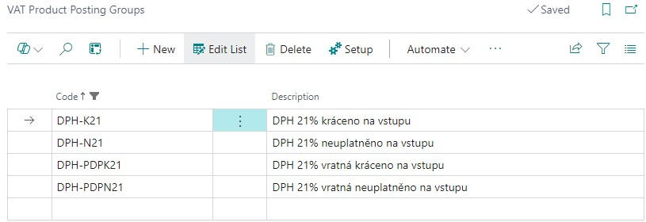
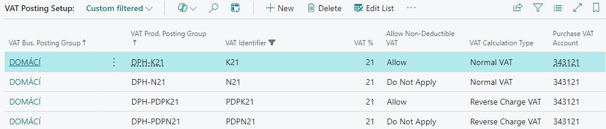
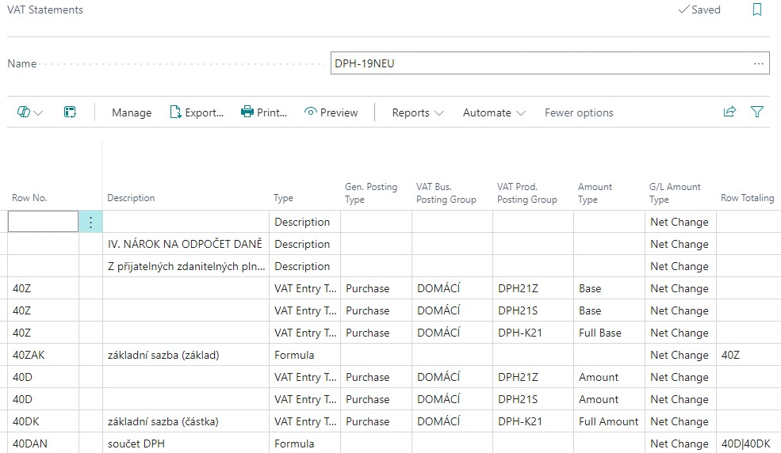
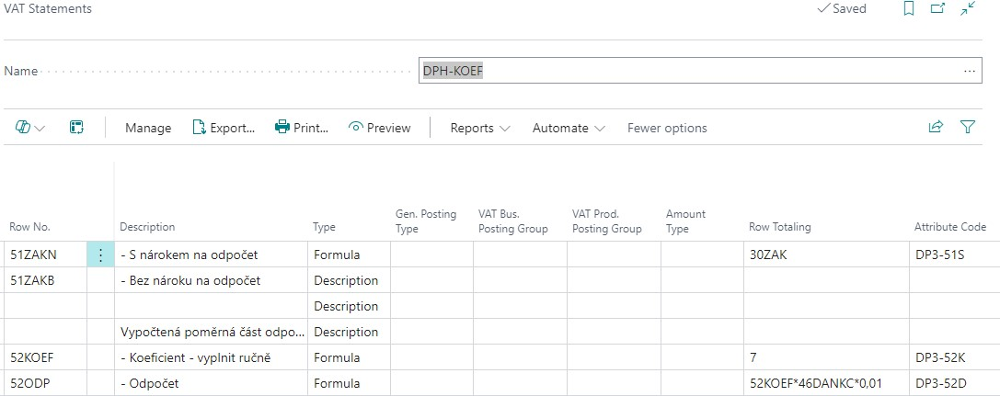

Non-Deductible VAT for Czech
Non-Deductible VAT
If the VAT payer uses the received taxable supplies within their economic activities both for supplies eligible for tax deduction and for tax-exempt, they are entitled to deduct tax only in the reduced amount. VAT on input must be reduced by the calculated coefficient. Non-deductible VAT functionality allows the application of a shortening coefficient to accounting cases.
The value of the VAT reduction coefficient can be set for the whole company in one place. The value will be applied to all marked combinations of VAT posting groups. In addition to the input tax reduction through the shortening coefficient, it is also possible to set a 100% tax reduction in the VAT account group combination, i.e. the case when there is no entitlement to apply VAT on the input side, but the output side (in the case of transactions under the reverse charge regime) has to report VAT in full. The VAT reduction is also applies to the VAT Report and the VAT Control Reports, which include the entire unreduced amounts. After the end of the calendar year, it is possible, on the basis of the calculated settlement coefficient, recalculate all VAT entries from period and post the difference between the originally applied and the settlement coefficient.
The module functionality includes
- Setting Non-Deductible VAT at a reduced or full amount
- Adjustment of input VAT postings, inclusion of non-deductible VAT in related accounts, the purchase price of items or assets
- Adjustment of VAT Reports and VAT Control Reports
- Reports for VAT reconciliation
- The settlement coefficient at the end of the calendar period
Application limitations
- Not applicable for purchase advance invoices
- Not connected to VAT Report Setup or VAT Returns.
Activation of Non-Deductible VAT
The activation of the Non-Deductible VAT functionality starts on the page VAT Setup by selecting the Enable Non-Deductible VAT field. If you have the Core Localization Pack for Czech application installed, the standard non-deductible VAT functionality is automatically extended for Czech posting and reporting purposes.
Switch the value of the field Enable Non-Deductible VAT to YES, the other related fields are activated. By running functionality, new fields in the tables are automatically activated, enabling them is irreversible.
Basic principles of posting non-deductible VAT
When applying non-deductible input VAT (partial reduction through a reduction coefficient or full reduction without deduction), the value of the non-deductible VAT is added to the to the basic account where the posting case is posted.
If there is no account in the relevant VAT combination in the VAT Posting Setup in the Non-Deductible Purchase VAT account field,the amount of non-deductible VAT is added to the account used in the posting entry. Otherwise (i.e. if you set any account), this account is used to post the non-deductible part of the VAT amount.
The amount is posted to the VAT accounts at a reduced value (or not at all), but the amounts should be reported in the original amount according to the original VAT document in the VAT Report or VAT Control Reports. In order to distinguish between the amounts in the posting and the amounts in the reporting, the non-deductible VAT functionality has extended the VAT Entries table with new fields:
- Base - standard field, shows the amount of the reduced base
- Amount - standard field, shows the amount of reduced VAT
- Non-deductible VAT base - shows the amount of the base not applied in VAT
- Non-deductible amount of VAT - shows the amount of VAT not applied in VAT
- Deductible VAT base - shows the amount of the VAT base increased by non-deductible VAT
- % of non-deductible VAT - shows the value of the VAT coefficient applied to the entry
- Amount of VAT base (original) - shows the value of the VAT base on the original document
- Amount of VAT (original) - shows the amount of VAT on the original document
VAT Return must be reported in the original amounts in the original unreduced range. The parameterization of the VAT Statement should be adapted to this - see VAT Report Setup.
The VAT Control Report should also be reported in the original amounts. The function for retrieving the lines of the control report is adapted so that it uses the Original VAT Base and Original VAT Amount from the VAT entry. Reduced values are not included in the control report.
At the end of the calendar period, the advance coefficient must be recalculated retrospectively (This is not handled in the Business Central system, you need to proceed in your usual way.). The value of the calculated settlement coefficient is entered in the Non-Deductible VAT Setup in the appropriate field and at the same time it is set as the value of the advance coefficient for the following period. If the settlement coefficient differs from the advance coefficient, you must run a batch job VAT Coefficient Correction to recalculate the entries.
This batch job goes through all VAT entries of the specified period with combinations of VAT posting groups set as input VAT reduction. It compares the value of the applied reduction coeficient in the field Non-deductible VAT % and the value of the posting coefficient, calculates the difference and post it as a new VAT entry in which it adjusts the VAT base and amount. The differeence in VAT is posted to the VAT Coefficient Correction Account from VAT Posting Setup.
Non-deductible VAT Setup
To work with the Non-Deductible VAT functionality, you need to carry out specific setup:
Setting the range of use Non-Deductible VAT
The functionality of Non-Deductible VAT is automatically applied when posting accounting cases with direct posting to financial accounts. You can also use it when posting the item cost, for job costs or fixed assets cost.
On the VAT Setup page, activate the fields as required
- Use for Item Cost
- Use for Fixed Asset Cost
- Use for Job Cost
Once activated, the value of the non-deductible VAT will be automatically added to the purchase price of the items, the cost of the assets or the job costs.
VAT Product Posting Groups Setup
To post accounting cases with non-deductible input VAT, you need to create a new VAT Product Posting Groups If you will post entries with input VAT reduction and cases where you will not apply input VAT at all, set up a separate VAT Product Posting Groups for these cases, e.g. as follows:

VAT Posting Setup
The VAT Product Posting Group created for posting non-deductible VAT must be set up for combination with the VAT Business Posting Group and define how the non-deductible VAT will be posted:
In the Allow Non-Deductible VAT field for the selected combination, select whether to charge non-deductible VAT
- Do Not Allow = standard combination of VAT Posting Groups for which VAT will be applied in full
- Allow = setting to apply the input VAT reduction coefficient according to Non-deductible VAT Setup
- Do Not Apply = setting for the case when VAT on input will not be applied, on output it will be in full original extent, i.e. 100% shortening coefficient.

For combinations of VAT Posting Groups marked with Allow in the Allow Non-Deductible VAT field, it is necessary to set the VAT Coefficient Correction Account, to which the difference between the shortening advance and settlement coefficient will be posted at the end of the calendar period
Non-deductible VAT Setup
The value of the VAT shortening coefficient is set in the system on the Non-Deductible VAT Setup page. For the calendar accounting period it is necessary to set the Advance Coefficient, and then at the end of the period to add the value of the recalculated Settlement Coefficient.
Both coefficients are set as percentages of the "non-applied part of VAT", i.e. if the calculated shortening coefficient is 7% and therefore only 7% of input VAT is claimed, the value of the advance coefficient in the system (i.e. the value of non-deductible VAT) will be 93.
Setting the settlement coefficient is also related to Source Code Setup. On this page you need to set the Source Code used in the annual posting of the difference between the advance and settlement coefficient. Set the value in the VAT Coef. Correction field.
VAT Report Setup
The VAT statement must be supplemented with the newly established VAT Posting Group combinations. Since the VAT statement must be entered with the original values, the parameterization of the rows in the Amount Type field must be modified to use the values Full Base or Full Amount.

Posting of Non-Deductible VAT in documents
The examples below assume the previous setup of non-deductible VAT, the created combinations of VAT Posting Groups and the setup of the advance coefficient for the selected accounting period - see paragraph Non-Deductible VAT Setup.
Example of using reduced VAT in a purchase invoice - normal VAT
- Choose the
 icon, enter Purchase Invoices and choose the related link.
icon, enter Purchase Invoices and choose the related link. - On Purchase Invoices page create with action New new purchase invoice.
- Complete the purchase invoice header in the usual way - select a number from the number series, select the vendor number, posting date, VAT date, external document number.
- In the purchase invoice line, select the value G/L Account in the Type field and in the No. field, select an expense account from the chart of accounts, e.g. 518100.
- In the VAT Business Posting Group and VAT Prod. Posting Group fields, select the combination that is set for the normal input VAT reduced by the reduction coefficient
- Fill in Quantity = 1 and Direct unit cost excl. VAT = 1.000
- Run the Preview Posting.
- View the G/L Entry. Account 518100 is debited with the basic cost price of 1000 plus a further entry for the proportionate amount of unapplied VAT. The VAT amount is reduced by a reduction coeficient
- Display the VAT Entry. The fields for Base and Amount show the amounts corresponding to the value of the reduced, deductible VAT. The fields Original VAT Base and Original VAT Amount show the values of the base and VAT amount according to the values in the original document, i.e. without reduction. The Non-Deductible VAT % field shows the value of the advance VAT coefficient.
Example of the use of reduced VAT in a purchase invoice - VAT in reverse charge
- Choose the icon, enter Purchase Invoices and choose the related link.
- On Purchase Invoices page create with action New new purchase invoice.
- Complete the purchase invoice header in the usual way - select a number from the number series, select the vendor number, posting date, VAT date, external document number
- In the purchase invoice line, select the value G/L Account in the Type field and in the No. field, select an expense account from the chart of accounts, e.g. 518100.
- In the VAT Business Posting Group and VAT Prod. Posting Group fields, select the combination that is set for VAT in reverse charge mode reduced by the input reduction coefficient.
- Fill in Quantity = 1 and Direct unit cost excl. VAT = 1.000
- Run the Preview Posting.
- View the G/L Entry. Account 518100 is debited with the basic cost price of 1000 plus a further entry for the proportionate amount of unapplied VAT. The amount of input VAT is reduced by a reduction coeficient. The output VAT amount is charged in full.
- Display the VAT Entry. In the fields for Base and Amount, the amounts corresponding to the value of the reduced, applied VAT are shown. In the fields Original VAT base and Original VAT amount, the values of the base and VAT amount are shown according to the values in the original document, i.e. without reduction. In the Non-Deductible VAT % field, the value of the advance VAT coefficient is given.
Example of the use of non-applied VAT in a purchase invoice - normal VAT
- Choose the icon, enter Purchase Invoices and then choose the related link.
- On Purchase Invoices page create with action New new purchase invoice.
- Complete the purchase invoice header in the usual way - select a number from the number series, select the vendor number, posting date, VAT date, external document number.
- In the purchase invoice line, select the value G/L Account in the Type field and in the No. field, select an expense account from the chart of accounts, e.g. 518100.
- In the fields VAT Business Posting Group and VAT Prod. Posting Group select the combination that is set for normal VAT not applied on input (100% reduction)
- Fill in Quantity = 1 and Direct unit cost excl. VAT in value 1.000
- Run the Preview Posting
- View the G/L Entry. Account 518100 is debited with the basic cost price of 1000 plus the full amount of the calculated VAT by a further entry. No VAT is charged at all.
- Display the VAT Entry. The fields for Base and Amount show zero amounts. The Original VAT Base and Original VAT Amount fields show the VAT base and amount values according to the values in the original document, i.e. without reduction.
Example of the use of non-applied VAT in a purchase invoice - VAT in reverse charge
- Choose the icon, enter Purchase Invoices and then choose the related link.
- On Purchase Invoices page create with action New new purchase invoice.
- Complete the purchase invoice header in the usual way - select a number from the number series, select the vendor number, posting date, VAT date, external document number.
- In the purchase invoice line, select the value G/L Account in the Type field and in the No. field, select an expense account from the chart of accounts, e.g. 518100.
- In the fields VAT Business Posting Group and VAT Prod. Posting Group, select the combination that is set for VAT in reverse charge mode reduced at 100%, i.e. not applied at input
- Fill in Quantity = 1 and Direct unit cost excl. VAT in value 1.000
- Run the Preview Posting
- View the G/L Entry. Account 518100 is charged with the basic cost price of 1000 plus the full amount of the calculated VAT in the next entry. Input VAT is not charged at all, output VAT is charged in full.
- Display the VAT Entry. The fields for Base and Amount show zero amounts. The Original VAT Base and Original VAT Amount fields show the VAT base and amount values according to the values in the original document, i.e. without reduction.
VAT Reporting with non-deductible VAT
For VAT Statements it is necessary to modify the parametrization of the VAT report so that for rows containing combinations of VAT Posting Groups reduced or not fully applied at input, the full amounts in the original values are included.
The value of the shortening coefficient can then be set manually in the corresponding row of the VAT report with the value in the Type = Formula field. In order to recalculate the input VAT only for selected rows of the report, it is necessary to create separate summation rows for the parts that include both full and reduced or non-applied transactions, in which full, reduced and non-applied transactions will be summed separately.

The VAT return must be exported in its original range and the reduction must be made only for the selected total series, or the reduction must be made only on the VAT Portal website.
The VAT Control Report must be submitted in the original document amounts, not in the amounts reduced or not applied. Therefore, the task for retrieving the lines of the control report uses the Original VAT base and Original VAT amount fields from the VAT entry. The amounts that have been reduced do not enter the report.
Non-deductible VAT control reports
The Documentation for VAT report (Recording obligation) contains columns with VAT values in original and reduced amounts. The total value of the Amount (LM) column is a check on the accounting, the total value of the Original VAT amount column is a check on the VAT report in original amounts.
There is a separate report layout for the VAT Documents List report, which contains columns with VAT values in original and reduced amounts. The total value of the Amount (LM) column is a check on the accounting, the total value of the Original VAT amount column is a check on the VAT report in original amounts.
VAT settlement coefficient
After the end of the calendar year, the accounting unit using the VAT shortening coefficient recalculates the transactions for the previous year and calculates the final VAT settlement coefficient (outside the Business Central system).
The newly calculated coefficient should be entered in Non-deductible VAT Setup as the settlement coefficient of the closed period and at the same time as the advance coefficient for the new accounting period.
If the coefficients differ in the completed period, it is possible to use the batch job VAT Coefficient Correction to recalculate the VAT entries and record the difference in the accounting.
- Choose the icon, enter VAT coefficient Correction and choose the related link.
- Set the Starting VAT Date and Ending VAT Date in the batch job (should be the same as the calendar year for which you are recalculating). The Ending VAT Date must be the end date from the Non-deductible VAT Setup for which the settlement coefficient is set.
- Toggle the Post field to control the test mode of the job or the actual posting of entries.
- The option in the Use Dimensions field controls how dimensions are used in newly created items. It will be posted according to the option either without dimensions or the dimensions from the account set as VAT Coefficient Correction Account in VAT Posting Setup will be used.
- In the Use Document No field, you can enter the number with which the coefficient adjustment entries will be posted. If you do not enter a document number, the original document number will be used for posting (Note: It is recommended not to set the document number).
- In the Use Posting Date field, set the posting date to which the posting should be made. If you do not specify a posting date, the original posting date of the entry will be used. (Note: It is recommended to specify the last date of the calendar period as the posting date).
- In the Use VAT Date field, set the VAT date with which the posting should be made. If you do not enter a VAT date, the original VAT date of the entry will be posted. (Note: It is recommended to enter the last date of the calendar period as the VAT date)
- On the Filter: VAT Entry tab, you can specify VAT Posting Group filters for use in a batch job. It is not necessary to set the filters, the batch job will automatically pass only those VAT entries with VAT Posting Group combinations that are marked in the Allow non-deductible VAT field with the value Allow
- The batch job will go through all (or just filtered) VAT Posting Group combinations with an Allow value in the Allow Non-Deductible VAT field. It will find the value in the Non-Deductible VAT % field in the VAT entry posted and compare it to the settlement coefficient. If it finds a difference in the coefficient, it calculates the difference in the VAT amount, creates a new VAT entry, and posts the difference to the accounting records. All newly posted entries and VAT entries have a separate Source Code for subsequent filtering options.
See Also
Core Localization pack for Czech
Czech Local Functionality
VAT Control Report
VAT Date
Finance